PULPCORE:
THE ART OF
DAVID RUSSELL TALBOTT
AMERICAN PULPCORE:
Perfect American Family
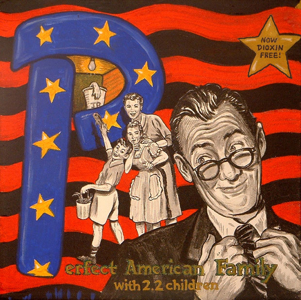
John takes the statistics supplied by the government very seriously.
U.S. Route 101
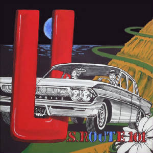
We were having so much fun driving the coast, we didn't even notice we'd been dragging a hobo since Santa Barbara.
Love Potion #9
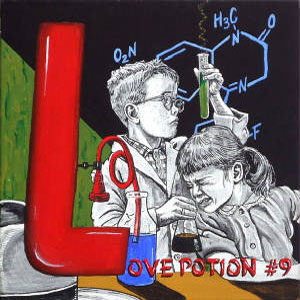
Greta began to suspect the new kid's intentions when his Kool-Aid tasted kinda funny.
Prank Calls
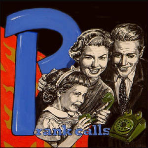
"Guess what Grandma? I'm pregnant!"
Celebrity Skin
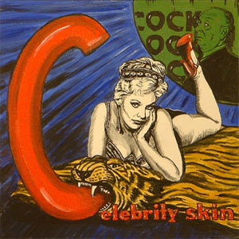
Hitchcock would bully some actors into baring all, "the trouble is today we don't torture the women enough."
Oeuvre Bitch
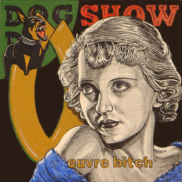
Bette Davis defined the role of the penultimate onscreen bitch, forever stigmatizing female dogs.
Real Men Don't Cry
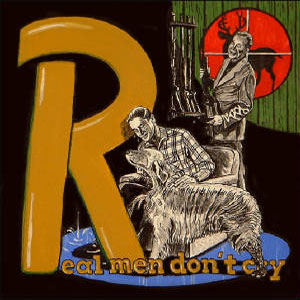
If Tommy didn't stop whining about it, Yeller wasn't going to be the only one put out of his misery.
Eat Your Veggies
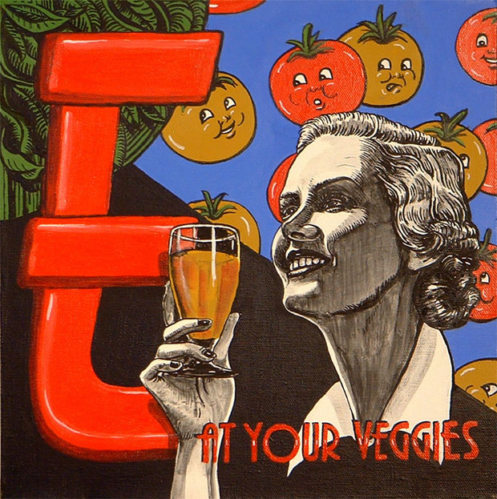
Strange, you could hear that year's crop of tomatoes scream as they were thrown in the juicer.
American Pulpcore Series #6
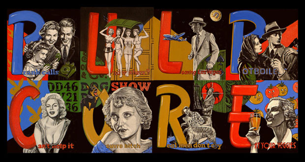
American Pulpcore Letters, available for sale at
Pulpcore.Etsy.com
Papa's Home
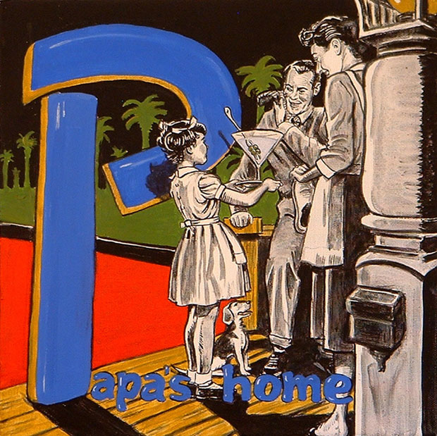
Margie quickly learned the only way to put a smile on New Daddy's face when he got home.
Under The Influence
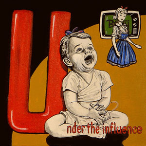
Even without a parent, young Jamie can discover everything important about being a woman via the miracles of modern Television.
Lil' Devils
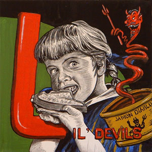
Theresa tried hard not to let the product mascots control her mind.
Pet Peeves
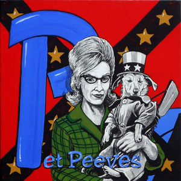
When the Chihuahuas moved into the neighborhood, we decided Trigger should exercise the right to bear arms as well.
Ciao Bella
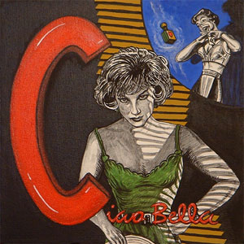
Sending poison perfume by mail is one way to get rid of the mistress.
Old Black Magic
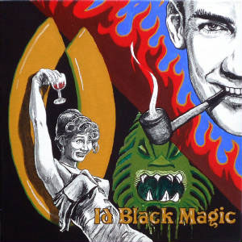
After we returned from the African voodoo ritual, neither of us could resist the taste of alcohol. Or animal blood.
Rags To Riches
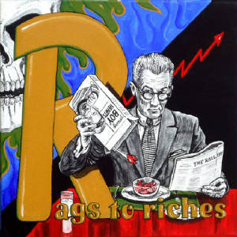
J.P. reminisced about the early days of banking, when all he could afford was man hearts.
Expecting
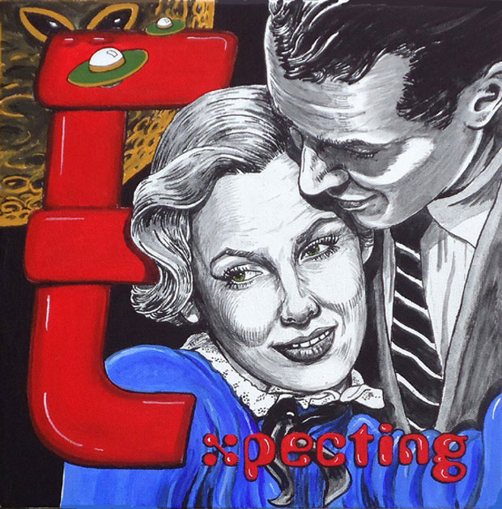
That night she convinced herself that Roger would have to love the baby, no matter what color, or species, it was.
American Pulpcore Series #7
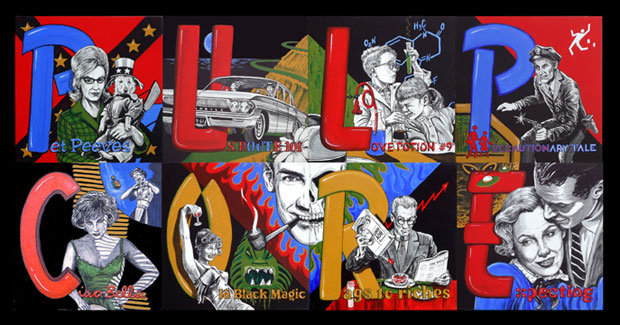
American Pulpcore Letters, available for sale at
Pulpcore.Etsy.com